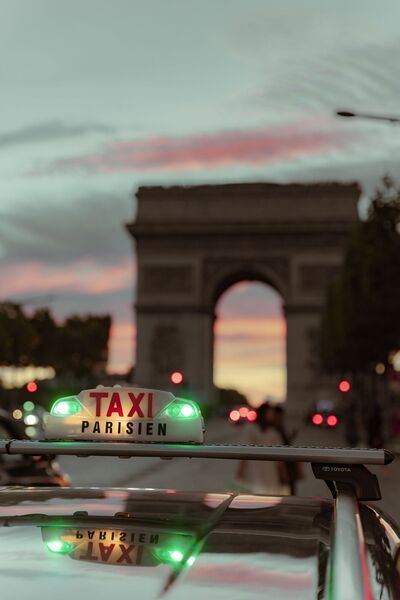
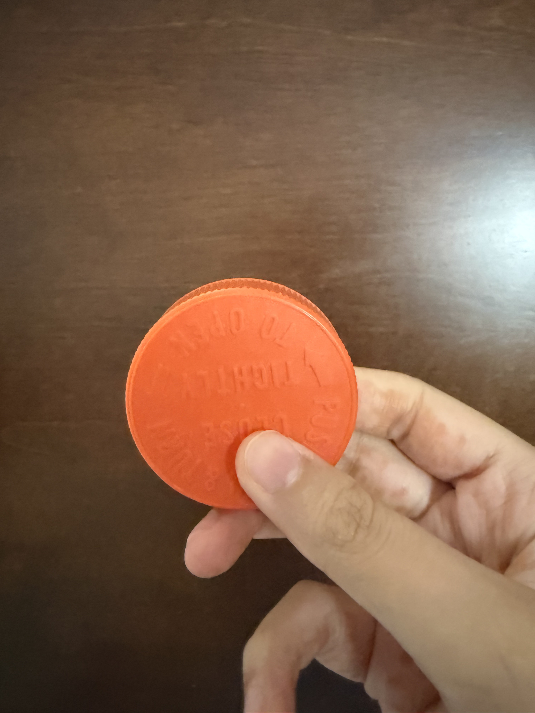

Everything Pictures
This page explores how images work in digital environments. It demonstrates image formats, file sizes, pixel dimensions, resizing methods, and the importance of maintaining correct image proportions when displaying pictures on the web.
Exploring Image Formats With a Pexels Photograph
I selected this photograph from Pexels because of its colors, detail, and visual quality. The photograph was taken by Jean-Baptiste Terrazzoni. Their work focuses on an urban taxi cab while blurring a beautiful view. The original image is a JPG file with dimensions of 496 x 745 pixels and a file size of 164 KB.
Image Format Changes
Original JPG
GIF Version
Grayscale Version
Black and White Version
Downsizing Images With CSS
Proper Reduction of Image With Editor

Improper Image Proportions With CSS
Improper Enlarging With CSS
Demonstrating Proportions With My Personal Geometry Photograph
This photograph shows a perfectly round object next to part of my body. I selected this object because it demonstrates how important image proportions are. The original photograph is a JPG image with dimensions of 558 x 745 pixels and a file size of 428 KB.

{kind=link}
{kind=link}
{kind=link}